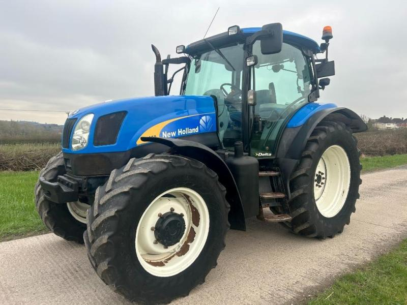

New Holland T6050

New Holland T6050 – це витривалий та універсальний трактор, який здобув популярність завдяки ідеальному балансу між вагою та потужністю. Його головна перевага – високий крутний момент, що дозволяє впевнено працювати з важким навісним обладнанням навіть на низьких обертах.
Ця модель часто обирається для польових робіт середньої важкості, таких як оранка, посів та косіння. Кабіна з низьким рівнем шуму та панорамним склінням гарантує оператору комфорт під час довгих робочих змін, а компактні габарити роблять його зручним і для логістичних завдань.
| Параметр | Значення |
|---|---|
| Клас тяги | 2,0 |
| Тип ходової частини | колісний |
| Колісна формула | 4х4 (WD) |
| Тип рами | напіврамна |
| Основне призначення | універсально-просапні роботи, важкі транспортні операції, заготівля кормів |
| Параметр | Значення |
|---|---|
| Модель | FPT NEF (New Engine Family) |
| Тип двигуна | 6-циліндровий, турбодизель з інтеркулером, з механічним впорскуванням або Common Rail |
| Спосіб охолодження | рідинне (водяне) |
| Розташування циліндрів | рядне, вертикальне |
| Діаметр циліндра/хід поршня | 104 мм / 132 мм |
| Робочий об’єм | 6,7 л (6728 см³) |
| Номінальна потужність | 93 кВт (127 к.с.) |
| Номінальні оберти | 2200 об/хв |
| Система пуску | електростартер |
| Питома витрата палива | 210–215 г/кВт·год |
| Параметр | Значення |
|---|---|
| Муфта зчеплення | суха дводискова (керамометалева) або мокра багатодискова (для версій з Power Shuttle) |
| Тип КПП | Synchro Command (механічна) або Dual Command / Electro Shift (напівсилова з перемиканням під навантаженням) |
| Кількість передач | 12 вперед / 12 назад (стандарт) або 24 вперед / 24 назад (з Dual Command) |
| Кількість діапазонів | 3 (Low, Medium, High) |
| Діапазон швидкостей (вперед) | 1,4 – 40,0 км/год |
| Діапазон швидкостей (назад) | 1,3 – 39,2 км/год |
| Вал відбору потужності | задній незалежний з електрогідравлічним керуванням, 540 / 540E / 1000 об/хв |
| Діапазон | Передача | Швидкість, км/год | Передаточне число | Тягове зусилля, кН |
|---|---|---|---|---|
| I (Low) | 1 | 2,12 | 316,5 | 48,00 |
| I (Low) | 2 | 3,15 | 213,2 | 48,00 |
| I (Low) | 3 | 4,61 | 145,6 | 48,00 |
| I (Low) | 4 | 6,83 | 98,2 | 42,40 |
| II (Medium) | 1 | 5,34 | 125,7 | 34,15 |
| II (Medium) | 2 | 7,95 | 84,5 | 22,93 |
| II (Medium) | 3 | 11,62 | 57,8 | 15,68 |
| II (Medium) | 4 | 17,21 | 39,0 | 10,59 |
| III (High) | 1 | 12,41 | 54,1 | 14,68 |
| III (High) | 2 | 18,48 | 36,4 | 9,87 |
| III (High) | 3 | 27,02 | 24,9 | 6,75 |
| III (High) | 4 | 40,00 | 16,8 | 4,56 |
| Параметр | Значення |
|---|---|
| Тип коліс | пневматичні шини (радіальні) |
| Марка шин | передні: 14.9 R28; задні: 18.4 R38 |
| Радіус ведучого колеса | 0,865 м (для задніх коліс 18.4 R38) |
| Кількість коліс | 4 (передні меншого діаметру) |
| Ведучі мости | обидва (передній міст підключається електрогідравлічно) |
| Режим | Витрата |
|---|---|
| Під час роботи з навантаженням | 16,5 – 22,5 кг/год |
| Під час холостих переїздів | 7,0 – 9,5 кг/год |
| Під час зупинок (холостий хід) | 1,8 – 2,5 кг/год |
| Параметр | Значення |
|---|---|
| Маса експлуатаційна | 4870 – 5173 кг (залежно від комплектації) |
| Довжина / Ширина / Висота | 4415 мм / 2220 мм / 2726–3050 мм (залежно від кабіни) |
| Колія / База | 1530–2130 мм / 2412 мм |
| Дорожній просвіт | 480 мм |
| Мінімальний радіус повороту | 5,0 м |
| Кінематична довжина | 1,15 м |
| Тип навісного пристрою | задній гідравлічний, триточковий (Кат. II/III) |
| Об’єм паливного баку | 250 л |
| Параметр | Значення |
|---|---|
| Особливості кабіни | Horizon™, одномісна, панорамне скління, низький рівень шуму (70-71 дБа), з кондиціонером, опаленням та пневмосидінням |
| Гальма | робочі — мокрі багатодискові на задній осі з гідравлічним приводом; автоматичне підключення повного приводу при гальмуванні |
| Електрообладнання | акумуляторна батарея 12 В (120–132 Агод), генератор 120 А (опційно 150 А) |
| Начіпний пристрій | задній триточковий гідравлічний (Кат. II/III) з системою EDC (електронне керування), вантажопідйомність — 5997 кг |